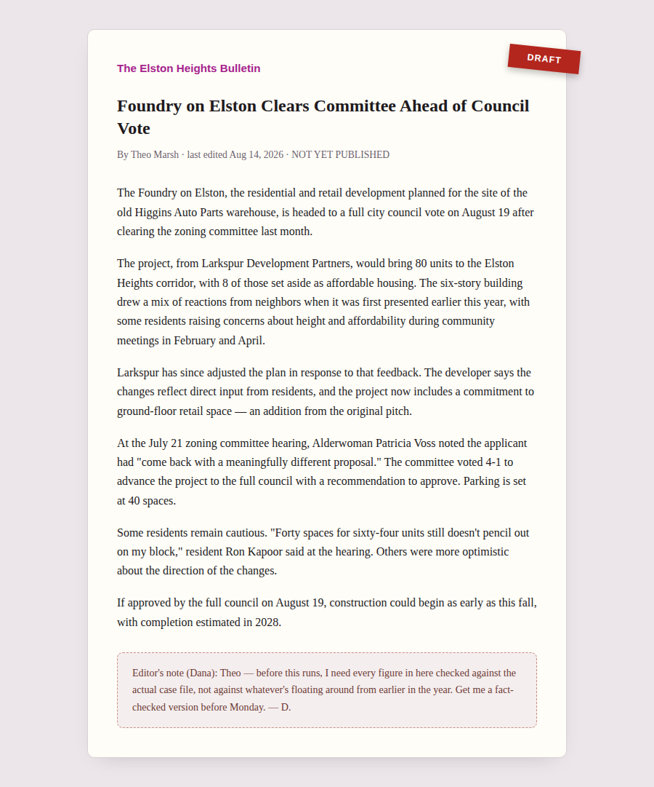
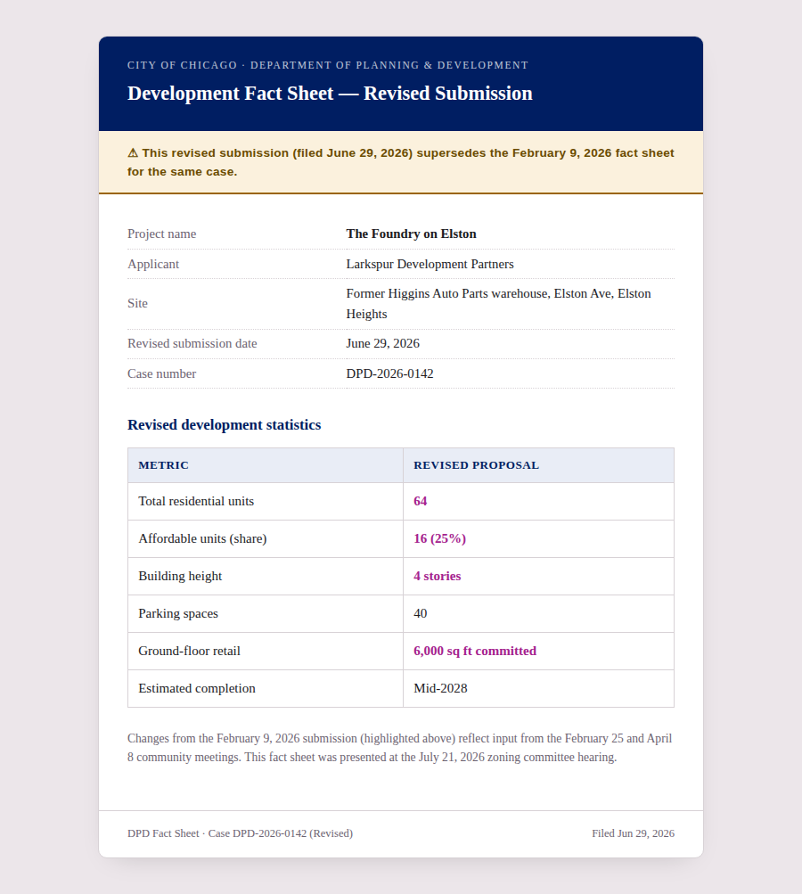

Facilitator Manual · Not for learner distribution
Module 4: Search & Verify
A new Level 1 module on AI search and document grounding. Everything you need before you teach this, including the verified answer key for all three beats.
Overview
Modules 1–3 taught judgment when AI produces something — a report, a summary, an analysis from data. Module 4 turns that same judgment toward AI when it's used to find something. Learners play a volunteer researcher for a neighborhood newsletter, the Elston Heights Bulletin, fact-checking a draft article about a local development proposal before it runs — using a real (fictional) case file of hearing minutes, fact sheets, a press release, a comparison chart, and the draft itself.
This is a new module, not a reimagine, and it's Level 1 with no prerequisite — it stands alongside Modules 1 and 2, not after Module 3. The scenario, cast, and documents are entirely new (Elston Heights, not Pinnacle Peak) so there's no dependency on prior modules' materials.
The three beats
Beat One — Ground it
Learners ask an AI assistant about the (fictional) development project with no documents attached, then again after grounding it in the real case file. Because the scenario is invented, the ungrounded pass is guaranteed to either be honestly empty or confidently wrong — there is nothing for any model to have memorized. That guarantee is what makes this beat reliable regardless of which AI tool a room happens to be using, the same design principle behind Module 3's reproducible Beat Two break.
Beat Two — Extract it, check it
Learners pull exact facts from three different formats (running text, a table, an image), then use those facts to do the actual assignment: catch which figures in the draft article are stale. The draft cites the superseded February proposal's unit/affordability/height numbers while getting parking and the retail commitment right — a realistic, partial failure, not a uniformly wrong document.
Beat Three — Summarize it, verify it
Learners ask a synthesis question with no single verbatim answer (why the proposal changed; how the community reacted) and learn a different verification technique — tracing claims to passages and flagging unsupported additions — since there's no one sentence to check a summary against.
The reframe to land
1. Searching got easy. Checking is the actual skill.
Using AI search well is primarily the work of verifying what it surfaces, not the work of searching itself. Say this explicitly near the end — it's the module's thesis, and it's easy for a room to leave with "grounding" as the takeaway instead, which is only Beat One.
2. Structural blindness is the highest-stakes idea in the room
Distinct from any single wrong answer: over-relying on AI search trains people to stop looking anywhere it can't reach — paywalled sources, internal documents, anything too recent to be indexed. You stop knowing what you don't know, because the tool never shows you the shape of its own blind spot. This is the one idea worth protecting time for even if the room is running long.
How the materials fit together
- Slide deck
Module4_Search_And_Verify.pptx— what you present. Frames the scenario and all three beats. It does not contain step-by-step instructions — it points learners to the lab guide for that.- Lab guide
Module4_Lab_Guide.html— the learner-facing steps for all three beats. Deliberately doesn't reveal which specific figures in the draft are wrong — don't paraphrase this manual's answer key into it live.- Case file starter kit
Module4_CaseFile_Starter.zip— all six source documents plus a plain-text bundle, ready to unzip and hand to an AI assistant. Nothing pre-answered inside.- This manual
- Prep, run sheet, document notes, and the verified answer key for all three beats.
Earlier grounding notes for this module are archived at archive/Module4_AI_Search_Concept.html for provenance — superseded by this manual and the materials above, kept for reference only.
Preparation
- Read this manual's "The verified answer key" section in full before you teach this — it's the fastest way to recognize a correct catch versus a lucky-looking one, especially for Beat Three's summaries.
- Actually do all three beats yourself with a real AI assistant before the session — see the Quick Start below. Which tool you use matters less than doing it firsthand once.
- Skim the deck's speaker notes for timing and beat-by-beat framing language.
- Confirm learners have an AI assistant that can accept a file upload or a long paste — that's the entire technical bar for this module. Unlike Module 3, nobody needs to run code or start a local server; grounding here just means attaching or pasting documents into a chat.
- Keep your own tested answers from the Quick Start on hand to reference if a group stalls — don't share them up front.
Quick start — do all three beats yourself first
- Unzip
Module4_CaseFile_Starter.zip. Ask a fresh AI chat (no documents attached) what it knows about the Foundry on Elston project. Note whether it says it doesn't know or invents an answer. - Attach the documents (or paste
06_all_documents_plain_text.md) and ask the identical question. Confirm it now answers correctly and can name its sources. - Ask for the exact vote-result quote, the exact affordable-unit count, and the exact total-unit figure from the chart image. Confirm all three match "The verified answer key" below.
- Open the draft article yourself and find the stale figures before checking the answer key — this is the fastest way to calibrate how much of a nudge learners will actually need.
- Ask the two Beat Three synthesis questions and read your own answers against the diagnostic notes below.
The verified answer key
Every answer below is directly traceable to a specific document in the starter kit — not a judgment call. Case number DPD-2026-0142 throughout.
Beat One — what to expect
Ungrounded prompt: "What do you know about the Foundry on Elston development in Elston Heights, Chicago — how many units, and what's the affordability breakdown?"
Since Elston Heights and the Foundry on Elston are entirely fictional, no AI assistant has this in training data. Either outcome — an honest "I don't know" or a confident fabrication — proves the point, and the design guarantees one of them happens regardless of which tool the room uses. Grounded, the same question should return 64 units, 16 affordable (25%), 4 stories, 40 parking spaces, 6,000 sq ft retail, with sources named.
Beat Two — the fact-check table
| Figure | Draft says | Current record says | Where to verify |
|---|---|---|---|
| Total units | 80 | 64 | Revised fact sheet table; chart image; hearing minutes §2 |
| Affordable units | 8 (implied 10%) | 16 (25%) | Revised fact sheet table; chart image; press release |
| Building height | Six stories | Four stories | Revised fact sheet table; press release |
| Parking spaces | 40 (already correct) | 40 | Revised fact sheet; minutes; press release |
| Retail commitment | Mentioned as included (already correct) | 6,000 sq ft committed | Revised fact sheet; press release; minutes §4 |
The draft's unit count, affordability, and height figures are the February (original, superseded) proposal — parking and the retail mention are already correct, copied from a more recent source. This is deliberate: it mirrors a real failure mode (partially-grounded research), not a uniformly wrong draft. Learners need to check claim-by-claim, not accept or reject the whole piece.
The sharpest catch needs no cross-referencing at all: the draft states "80 units" in paragraph two, then quotes Ron Kapoor saying "sixty-four units" in paragraph five — the draft contradicts itself. A careful read alone surfaces this before anyone opens a fact sheet.

The draft, as given to learners — self-contradicting

The current record — explicitly marked as superseding Feb 9
Beat Three — summary diagnostics
"Why did Larkspur revise the proposal, and what changed?" Strong answer (synthesized from the press release + minutes, not verbatim anywhere): fewer total units, roughly double the affordable share, a shorter building, and a new retail commitment, in direct response to concerns raised at the February 25 and April 8 community meetings. Weak answer: restates the numbers from Beat Two without the "why" — the community-feedback causation is the part that requires synthesis.
"Summarize the community reaction at the hearing." Strong answer: mixed-to-positive — welcomed the added affordability and reduced scale, but parking remained a recurring concern, and several residents wanted the retail commitment written into the final agreement. Weak answer: only repeats the two named quotes (Odom, Kapoor) and misses that "four additional residents" also spoke with broadly similar sentiment — a sign the pass read the quotes but not the full public-comment paragraph.
Verification technique to reinforce: trace each clause to some passage (paraphrase is fine, invention is not); flag anything added that isn't traceable to any document; re-ask with different phrasing as a triangulation check.
Run sheet
Throughline to keep visible throughout: “AI search doesn’t remove the work of finding things out — it relocates it. Your job stops being ‘search for the answer’ and becomes ‘verify what it found, and notice what it couldn’t have found.’”
| Time | Section | What happens |
|---|---|---|
| 10 min | Setup | Read Dana's assignment aloud. Land why this module is about verification, not search — read the throughline. Before anyone opens an AI tool: what would you personally check before putting your name on this story? |
| 10 min | Beat One — ask ungrounded | Learners ask an AI assistant about the case with no documents attached and note what comes back. Don't let anyone skip ahead to grounding yet. |
| 15 min | Beat One — ground & compare | Attach or paste the case file, ask the identical question, compare answers. Debrief: name explicitly why the fictional setting guarantees the contrast. |
| 15 min | Beat Two — extract three facts | Pull the vote quote, the affordable-unit count, and the chart's total-unit figure, using the quote-then-interpret technique. Circulate for tool troubleshooting only. |
| 15 min | Beat Two — check the draft | The core diagnostic beat — find the stale figures claim-by-claim. Don't confirm or deny when asked "is this the error?"; ask how they'd check. Debrief with the fact-check table above. |
| 20 min | Beat Three — summarize & verify | Ask both synthesis questions, apply trace-and-flag verification, try re-phrasing as triangulation. Debrief with the strong-vs-weak notes above. |
| 5 min | Naming the pattern | Land the reframe (checking is the skill) and structural blindness explicitly — don't let this get cut for time. |
| 10 min | Bring it home & wrap | Think-pair-share on learners' own AI-search habits, then the three-beat cheat sheet to take with them. |
~100 minutes total. Beat Two is the longest single beat (30 min) — it's carrying both the extraction technique and the core diagnostic catch; don't compress it to protect Beat Three.
Document notes
HTML00_original_fact_sheet.html
- SUPERSEDED February 9, 2026 submission. 80 units, 8 affordable (10%), 6 stories, 48 parking, no retail commitment. This is where the draft's stale numbers come from — correct at the time, wrong now.
HTML01_revised_fact_sheet.html
- CURRENT June 29, 2026 submission, explicitly labeled as superseding the February version. 64 units, 16 affordable (25%), 4 stories, 40 parking, 6,000 sq ft retail. This is the record to check the draft against.
HTML02_hearing_minutes.html
- CURRENT July 21, 2026 zoning committee hearing. Verbatim quotes (Voss, Odom, Kapoor), 4–1 vote result, and the confirmation that the retail commitment will be binding — useful for both Beat Two (exact quote) and Beat Three (community reaction synthesis).
HTML03_press_release.html
- CURRENT Larkspur's June 29, 2026 release. Best single source for the "why it changed" synthesis question — states the community-feedback causation directly.
PNG05_proposal_comparison_chart.png
- CURRENT Original-vs-revised bar chart, total and affordable units. The image-extraction target for Beat Two — deliberately not duplicated in the plain-text bundle.
HTML04_draft_article.html
- THE THING BEING CHECKED Theo's draft. Stale on units/affordability/height, correct on parking/retail, and self-contradicting on the unit count via the Kapoor quote. See the fact-check table above.
Facilitator judgment calls
- If a group's AI tool won't accept file uploads. Have them paste
06_all_documents_plain_text.mddirectly into the chat instead — it covers every document except the chart image. For the image-extraction step, they can describe the chart's axis labels and bar heights to the assistant themselves, which is itself a useful fallback worth naming out loud. - If a group catches the self-contradiction and stops there. That's a real catch, but it's only one of three stale figures. Nudge: "good — now check the rest of the draft against the fact sheet, not just against itself."
- How much to hint during Beat Two. If a group is stuck past the 10-minute mark, the one fair nudge is "compare the draft's numbers to the most recent fact sheet, not the first one you find." Don't say more than that unprompted.
- Grading Beat Three. There's no single correct sentence — judge by whether the learner can defend each clause against a source, not by wording match to the model answer above.
- Whether to share your own Quick Start answers. Keep them in your back pocket for a group that's genuinely stuck, not on the projector by default — showing them early removes the diagnostic work Beats Two and Three are for.